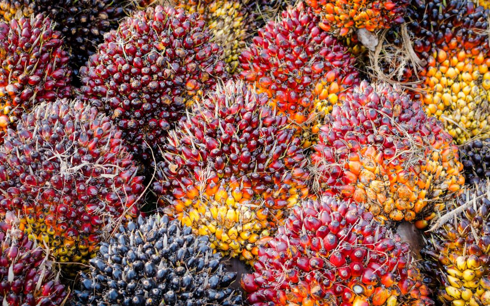

Bisnis Kami
Layanan perkebunan, pengolahan minyak sawit, kemitraan petani, dan produk komoditas unggulan PT Nafasindo.
PRODUK PERUSAHAAN
Komoditas Hasil Olahan Pabrik Kelapa Sawit PT Nafasindo

Minyak Sawit Mentah (CPO)
Minyak sawit mentah dengan tingkat keasaman dan kadar air yang terjaga ketat sesuai standar mutu komoditas ekspor dan industri minyak goreng.

Inti Sawit (Palm Kernel)
Inti biji kelapa sawit olahan kering bermutu tinggi yang siap diproses lebih lanjut menjadi minyak inti sawit dan bahan pakan ternak.

Tandan Buah Segar (TBS)
Hasil panen dari kebun sawit inti dan kebun mitra swadaya yang melewati inspeksi sortasi ketat untuk menjamin rendemen minyak optimal.

Perkebunan Kelapa Sawit
Kami menanam dan merawat kelapa sawit di Kabupaten Aceh Singkil. Perawatan yang teratur menjaga produktivitas tanaman dan mutu buah.
- Pembibitan unggul, penanaman, dan peremajaan tanaman berkelanjutan
- Pemupukan tepat dosis dan pengendalian hama secara terpadu
- Panen pada tingkat kematangan buah yang presisi

Pabrik Pengolahan Kelapa Sawit
Pabrik Kelapa Sawit kami mengolah tandan buah segar menjadi minyak sawit mentah (CPO) dan inti sawit berstandar industri.
- Penerimaan, penimbangan, dan sortasi ketat tandan buah segar
- Pengolahan bertahap dari perebusan uap hingga pengepresan
- Pemurnian dan pengujian laboratorium mutu sebelum pengiriman

Kemitraan Petani Swadaya
Kami bekerja sama secara transparan dengan kelompok tani dan petani swadaya agar hasil panen kebun masyarakat memiliki kepastian pasar dan harga adil.
Perusahaan juga aktif memberikan fasilitas pendampingan sertifikasi RSPO bagi kelompok tani mitra setempat.
- Pembelian TBS berkala dari kelompok tani mitra
- Pendampingan teknis budidaya dan pemeliharaan kebun
- Edukasi penerapan praktik perkebunan berkelanjutan

Keselamatan Kerja dan Pengelolaan Lingkungan
Keselamatan pekerja dan kelestarian lingkungan kami perlakukan sebagai bagian mendasar dari operasional sehari-hari.
- Identifikasi bahaya dan manajemen risiko keselamatan kerja menyeluruh
- Penyediaan Alat Pelindung Diri lengkap bagi seluruh karyawan
- Pengelolaan limbah cair pabrik secara bertanggung jawab